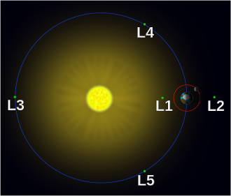

DIBS

Lagrange Points
In a two body system each body excerpts some gravitational force and has some centripetal force while in orbit. Every small object that is in the system will experience a combination of the gravitational pull of the two main bodies and its own centripetal force. In a two body system there are 5 points known as Lagrange Points in which these forces perfectly balance each other and a test particle can remain static or “parked” in one of these spots. The points are labeled L1, L2, L3, L4, L5. In an accreting system that has Roche lobe overflow, material will flow from one star to the other through the L1 point. The figure below shows the location of these points for the case of the Earth-Sun system.

Artist’s representation showing the 5 Lagrange points for the Earth-Sun system. Credit: Xander89, CC Licence